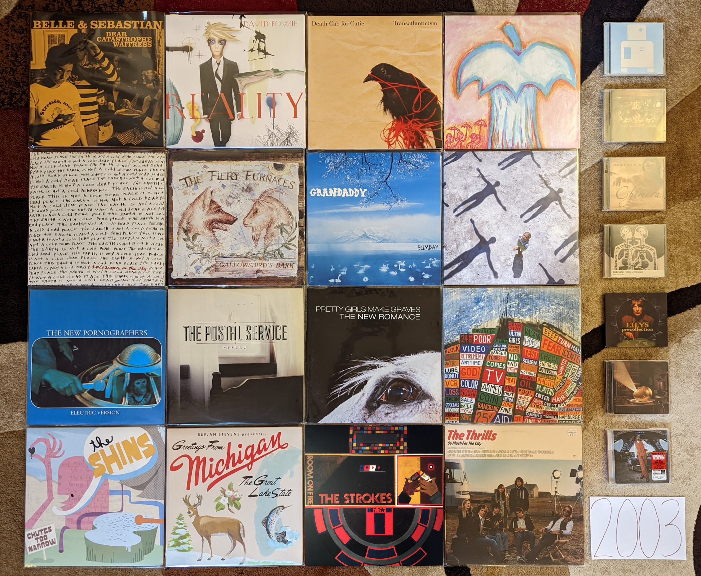

2003¶
Looking at the image below, I see a time that when I think about it seems so long ago, but somehow also feels like only yesterday. This applies from both a music/technology standpoint, and my personal life. I remember it simultaneously like the beginning of the age I still live in, and the fragments of a very different time.
In 2003 two major changes had come to how I consume music that in some form persist today. First, I would download the first commercially released digital music files that would enter my collection. Like almost anyone my age I had used applications like Napster, KaZaa, WinMX, and Limewire to download music since the late 90s, but the labels were finally starting to realize they should start selling the product that young consumers clearly wanted. Interestingly, it was the McDonald’s Monopoly game that would lead me to Apple’s nascent iTunes music store. In the Summer of 2003, the game pieces had a new feature in the form of a second chance code printed on every game piece. This code could be used to play an online game for a range of prizes. I forget the details, but somehow I had worked out the patterns where I was able to receive on nearly every play either: a free Snapfish digital print (I won hundreds, and still have some to this day) or a free iTunes download. My total winnings were several dozen downloads that I would spend on the latest indie hits or back catalog tracks on the store. I was a poor grad student living in Cleveland for the summer while I worked at NASA and Micky Ds made a great cheap meal. There were also lots of other folks around me who weren’t exploiting the game that I could get extra game pieces from. What started humbly, would soon be the primary way me and pretty much everyone else would acquire music.
The second big change was the introduction of both Sirius and XM satellite radio. Both services had a soft launch the year before, but 2003 was the start of the national push. It would be the first major challenge to legacy, commercial terrestrial radio, and would start a transition that internet radio and the streaming services would later complete. Shoutcast and other early internet streaming platforms had introduced me to the idea of expanded and niche radio playlists, but satellite made this technology professional and put it in my car. In the summer of 2003, during a visit back to State College on the weekend break from my responsibilities at NASA, I bought a Sirius plug-and-play radio at Best Buy. This unit had docking stations that allowed me to listen either in my vehicle or hooked up to a home stereo. I would quickly discover the stations Sirius Alt Nation and The Vault. These would expose me to the latest modern rock hits and semi-obscure classic rock respectively. While I was yet to discover the Sirius indie channel (Left of Center) there was extensive playlist crossover, and I was getting dialed into the exciting new developments on independent labels of the USA, UK, and Canada. What I was hearing an loving on Sirius was becoming what I spent those harvested iTunes downloads on. The pipeline of curated, genre programming was motivating digital consumption of new releases. This system largely persists today, though it is more likely Pandora or Spotify radio leading to streams on Spotify, Apple Music or YouTube.
This was both the beginning of my independent adulthood, and a time that I can barely relate to anymore. I was still in school, but I now had a grad student position that could cover all of my expenses. For part of the year, I was living in Cleveland, which felt like an exotic far away place, and was the most distant place from my hometown I had ever spent a significant amount of time. My newly found financial independence and distance gave me the confidence to take a major step. Late in 2022, I finally let my family know I wanted nothing to do with the cult I was raised in. 2003 was the year when I started to work out what the future was going to be like. In a way, I was starting over as a young adult. It was a confusing time where I had to find meaning and stability outside of the harmful organization and limitations I had known before. It was scary and overwhelming, but more than anything it was incredibly exciting. A massive weight had been taken off of my shoulders, and I didn’t know what I was going to do next. However, I knew for the first time in my life, right or wrong, it would be what I wanted to do.
{kind=link}
These Are the Vistas by The Bad Plus - I bin the work of these guys into two groups, my favorite album (Suspcious Activity?) that was unique and superior, and the rest. This is the best of the rest. We have the usual mix of mostly rock covers, and a few originals. The improvisation is fairly out there, but the familiar pop tunes ground the whole thing. The other records in the “rest bit” are just like this, just not as good. [Memory: This was the first record I went out and bought after hearing them on XM Beyond Jazz in 2006. It was good enough that I went out to get the rest, but with the noted exception of Suspicious Activity? this would never be topped.]
Dear Catastrophe Waitress by Bell and Sebastian - At the time, this was a very controversial record. The more polished pop sound offended the fans of the earlier chamber folk focussed records. In retrospect, it doesn’t feel as radical as it was perceived at the time. Yes there is more production here, and the songwriting feels a bit more ambitious, but this was more of a gradual shift than it was taken to be at the time. In many ways, this is the last record by the old version of the band with a few new elements that would point to their future form. [Memory: This was my point of entry to this band, and probably indie pop in general. I remember hearing “Stay Loose” playing on Sirius Alt Nation while cooking out on the back deck of my grad school apartment. That song (which I loved) was not representative of the album or the band in general, but when I did get the album I really liked it as well. I would gradually become a fan of pretty much their entire back catalog.]
Reality by David Bowie - The third, and probably best of the neo-classical Bowie records. A reflective period where the artist was making new music that was inspired by, but only tangentially related to his classic 70s records. A really perfect latter career record, and “Never Get Old” is one of his very finest songs of all. [Memory: At the time I assumed that he would go on forever making excellent records like this every few years, and touring regularly. This would be his last record for more than a decade, and his last tour ever.]
Long Gone Before Daylight by The Cardigans - What happened to these guys? They were such a happy pop band, but now they are making sad country-esque songs. The singer even went from blonde to full black hair goth. It works pretty well though. A really enjoyable, if a subdued and somewhat downtrodden record. [Memory: I remember listening to this frequently during my early days in my first job. I apparently didn’t buy this until it had been out for a few years.]
Transatlanticism by Death Cab for Cutie - I’ve always wondered how much of the breakout success of this record was due to the massive success of the Postal Service record right before this. That said, Ben Gibbard’s primary band hit the bit time after this one. This was their last records as an indie rock artist, as the majors and the arenas would be waiting. This still stands as their finest work, and the lack of perfect polish adds a charm missing in their later work. [Memory: I don’t know that any song is more 2003 than “Title and Registration.” When I hear all about that glove compartment I’m taken back to the world of my 23 year-old self.]
Apple O’ by Deerhoof - Their early albums are interesting, but a little too rough around the edges to be totally listenable. They got things together here, and while this still has a serious edge, it always centers itself in a way that make it digestible. Lots of wild drumming, heavy guitars, and cutesy weirdness. This is the formula that would make for their strongest stretch of records. [Memory: My vinyl copy of this was a record store day exclusive. I miss when RSD was more about the kind of small label artists that need those kinds of special releases.]
Chimera by Delerium - This is where they started adding more light pop elements, and the remaining ambient industrial elements faded a bit. There is still enough of their classic period sound here for me to really dig the record, but I haven’t connected with anything since. It is interesting how Kristy Thirsk finishes out the album with the excellent “Returning”. She started their classic period with “Flowers Become Screens” on Semantic Spaces, and has book-ended their most successful era. [Memory: I had totally forgotten about this record and it was one of my big rediscoveries while doing the prep work for this list.]
The Earth Is Not a Cold Dead Place by Explosions in the Sky - Post-rock has fallen out of favor in recent years, and it can be hard to remember this was once considered one of the finest records of the decade. It still is one of the greatest works in that much maligned genre, and instrumental music that manages to be more than a background. It will always be most famous as the backdrop to Friday Night Lights, but it is very easy to enjoy all on its own. [Memory: In 2006 I downloaded many of the key post-rock releases from eMusic. This was one of the first I checked out, as much for its reputation as for it being 6 tracks long, and eMusic was billing me by the song.]
Gallowsbird’s Bark by The Fiery Furnaces - Most of what made them great is already on display in this debut. The unpredictable, inventive instrumentation and structure along with the highly unusual style of performance unique to this duo. The songwriting is a little raw and not up to the standards of the next few releases. I don’t listen to this often, but there are a couple great songs here, and a whole lot of potential. [Memory: I actually didn’t like this record that much, but my completionist tendency led me to add it to my otherwise complete vinyl catalog of the band. After a few listens on the big black disc, my opinion became more favorable. The same did not happen with Rehearsing My Choir.]
Sumday by Grandaddy - The middle record in the outstanding trilogy of releases that closed this band’s original career is the most subtle of the bunch. This is much more like their early releases, mostly comprised of upbeat little pop songs accented by electronics. It ends with a moody cluster of three tracks which would have fit right in on the prior record, including the superb closer “The Final Push to the Sum”. [Memory: I found out about this record trading music with a friend. I loaned her The Thrills debut, as a California resident I was curious about her opinion of their homage. She responded by sharing more authentically California sounds.]
Bodysong by Jonny Greenwood - So many folks with a music degree are very jealous of the attention Radiohead’s guitarist gets for his “Classical” style movie scores. This first score proves that the attention was warranted, from the beginning. A tremendously interesting soundscape that does the screechy violin style contemporary classical better than lots of folks who go to school for years to make it. [Memory: Sirius Alt Nation used to play some pretty out there stuff in the early days. That is where I found out about this release. I didn’t even realize who the artist was until after I tracked down the somewhat obscure CD.]
Precollection by Lillys - An interesting combination of their preceding Kinks inspired sounds, and 80s psych acts like Echo and the Bunnymen and The Church. In other words designed for me to like. [Memory: I heard their newest songs on Sirius in 2005, and later found this on discount at Mike’s Movies and Music. After picking this up, I had to checkout there entire diverse catalog. I remember having to import some of the more obscure EPs from the UK, for a higher sum than I would typically pay for a CD.]
Absolution by Muse [2003 Favorite] - This was the album tha finally got some attention in the USA, and it is easy to see why. This downplays the progressive elements of the last record a bit, and provides something that is a bit more straight ahead hard rock. This was the perfect thing for all the folks who listened to 90s alt-rock, but who weren’t digging all the post-grunge of the day. [Memory: Another Satellite radio discovery. For some reason Sirius ALt Nation picked up on this almost a year after it was first released.]
Electric Version by The New Pornographers - From a pure pop song standpoint, this is their finest moment. A tremendous collection of simple, hook laden tunes that do a lot with the same few elements. They had to get a bit more complicated from here on out to keep things interesting, but there is a real appeal to the simple treats on offer here. [Memory: “From Blown Speakers” has to be one of the songs that I have listened to the most in my life. How many hundreds of times have I listened to that 2:49 of pop perfection?]
Speakerboxxx/The Love Below by Outkast - At times I have wondered if this album happened organically or if at some point a decision was made to produce a sprawling, divergent double album designed to signal the creative parting of the ways. Perhaps a bit of both. Regardless, what we have here is a very diverse collection of genres and styles, and the majority are done quite well. At this point it is mostly known as the record that produced the all-time hit single of “Hey Ya!”, but there is a lot more here to like, from the wildly creatively and very funky southern hip hop of “The Rooster” to the genre bending psychedelic R & B of “Roses” that almost seems to anticipate future artists like Janelle Monae. [Memory: I bought this record at Circuit City the day it came out, and the second I heard “Hey Ya!” I knew it was going to be a massive hit. Everyone would soon know who Outkast were, but only a few short years later, they were gone.]
Give Up by The Postal Service - A massively influential record that spawned dozens of imitation indie-electronic pop acts, most of which were terrible. Somehow the brightness and earnestness does not become grating here, and what would soon sound tired, is still innovative. It is probably good that this project never spawned a second record, as that might have been bad as well. What is recorded here though is almost universally brilliant. [Memory: This record had a really slow rise to prominence. It came out in January of 2003, and I didn’t hear anything of it until I caught “Such Great Heights” on Sirius Alt Nation in the summer of that year. I was still early. It wasn’t until the song appeared in several commercials in 2004 and the movie Garden State (yuck!) happened, that this became the indie landmark we think of today.]
The New Romance by Pretty Girls Make Graves - An outstanding anomaly of the post-punk revival that dabbles in new wave and pop-punk songs. It actually sounds a bit like music that would be very popular only a few short years later. It is a shame that this band has become so obscure over time, this really holds up well. [Memory Another discovery on Sirius Alt Nation in my early days listening to satellite radio. I bought a download of “Something Bigger, Something Brighter” but it would take me several years to finally get the record. While that is still my favorite song, This is a solid album throughout.]
Hail to the Thief by Radiohead - A less consistent record than what came before, but the highs are very high. “2 + 2 = 5” is an especially great song, and the last big rocker these guys would ever make. This is where the sleepy mid-tempo tunes started to appear in large numbers, and they aren’t all as interesting as the classic “There, There”. [Memory: For some reason I downloaded the song “There, There” years before I ever heard this record. It was one of the first Radiohead songs I was really into, and kind of a strange point of entry. Maybe it was the recent single of that time?]
Chutes Too Narrow by The Shins - A very similar sound to their first record, but not quite as good. That said another very pleasing power pop record. [Memory: “So Says I” was the first track I heard from these guys, but when I went out to find the album I had to settle for the first record, since it was all I could find at Circuit City that day. I eventually found this record at Tower Records in King of Prussia. It is hard to remember the days when looking for music was a struggle.]
Michigan by Sufjan Stevens - A much smaller, humbler folk record than the second (and final) state album Illinois. Some very pretty, somber music. Listening to this now, this sounds more like the best record from his early period, and less like the start of the golden middle career. [Memory: Every once in a while I will file away a long held memory, about a fairly minor event in my life with an accompanying soundtrack. In 2005 I moved out of my last college apartment, and got a place of my own. There would no longer be bus service regularly to campus. Somehow this finally felt like adulthood. I rode the North Artherton bus into central campus to visit the engineering library one last time and the instrumental track “Redford” played giving this moment a far more profound atmosphere than it probably deserved.]
Room On Fire by The Strokes - The sweet spot of this band for me. It still has the edgy post-punk sound of their first record, but with more of the poppy-ness that would dominate the later releases. The Albert Hammond Jr. penned song “Automatic Stop” is my favorite song of theirs. [Memory: This was the very first thing I discovered on Sirius Satellite radio in 2003. It was my gateway to 2000s indie.]
So Much for the City by The Thrills - A bunch of sunny pop songs about California by a bunch of people from Scotland. A unique concept for a record that works out surprisingly well. Both an early specimen of 2000s indie-pop and somewhat of a musical anomaly with little to compare it to. [Memory: After hearing “One Horse Town” on Sirius Alt Nation I went to the local indie record store City Lights for the first time to look for a copy. I remember going to the counter and the owner telling me he was happy to sell “a nice record for a nice price.” He would sell me many records in the years ahead.]